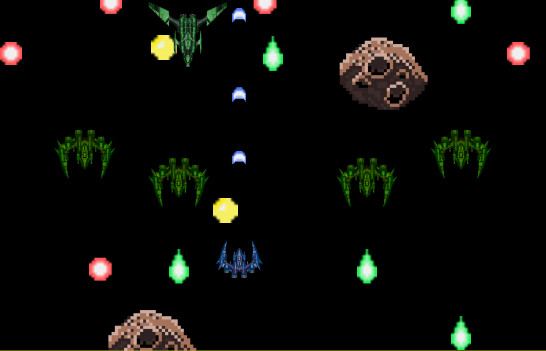
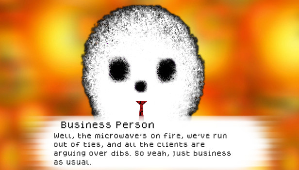
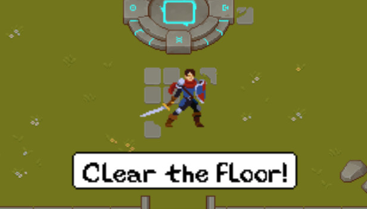

Projects:
About me:
I have an immense respect for the different mediums storytelling can manifest through. Ever since I was a child I was obsessed with telling stories through games, creating my own series of comics, and creating my own card games out of paper. Over the years I've practiced musical performance as well as composition in various genres, and even created interactive stories for my friends through D&D. Part of why I decided to come to RIT was to broaden my range of skills and find the medium with which I could be most satisfied with my own storytelling; and through the bachelor's GDD program I hope to reach, or come closer towards, this goal.
//2 Minute Mass Attack

Sometimes time goes by a lot slower, this is one of those times.
Sometimes 2 minutes is all you have to save the world.
A short top down shoot-em-up bullet hell created for my Interactive Media Development class as a solo
developer. Explored topics of vector based movement, and designed multiple unique enemies with that
theme in mind.
[Github]
repository
[Play in browser]
github pages
Controls: (WASD to move, P to fire)
//Unfinished Business

Struggling to make ends meet, you find yourself in the employ of an odd group of lingering spirits.
Join 'Unfinished Business' in their mission to free these lost souls; bound to this world by their
ties to the living.
Unfinished Business is a visual novel I built from the ground up as a solo developer. I had been
developing it specifically in the Unity engine as part of an effort to learn and familiarize myself with
the engine beyond my current classwork. Through it I gained valuable experience in time management and
how to better structure my work for future development. This game was created for the 2022 Spooktober
Halloween Game Jam.
[Github]
repository
[itch.io]
download page
//Mournblade

Created a C# top-down roguelike in Visual Studio using the MonoGame framework in a team of 5.
Implemented file IO, basic gameplay elements, sprite animations, and debugged a majority of the game.
Struggled with balancing team workload and gained valuable experience in communication as
a co-developer, as well as grew an appreciation for the responsibilities and contributions of any member
of a given team.
[Github]
repository
[YouTube]
gameplay